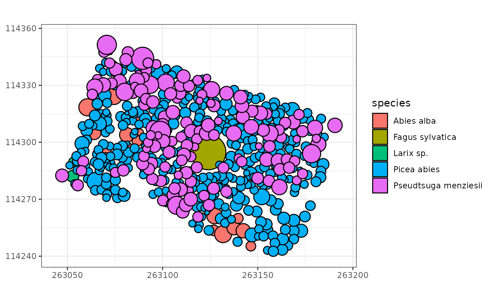
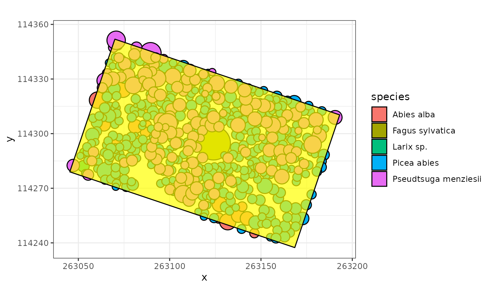
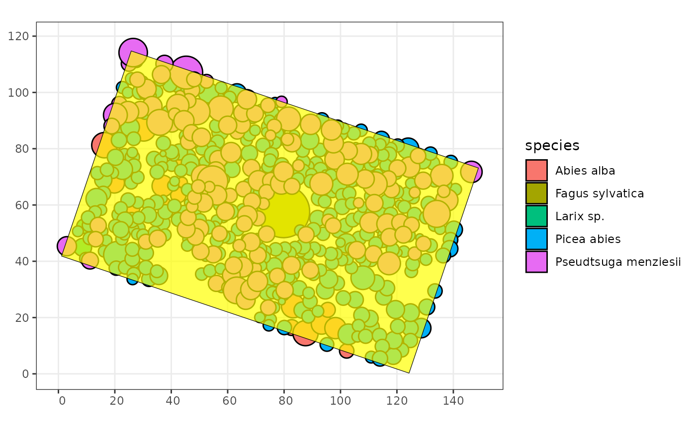
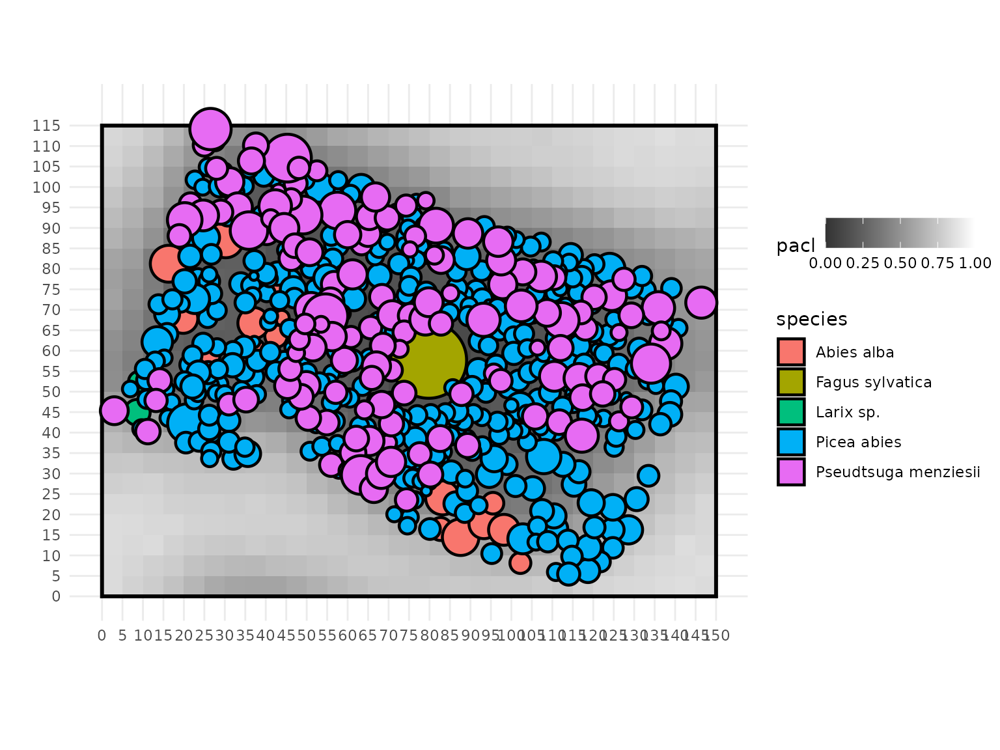
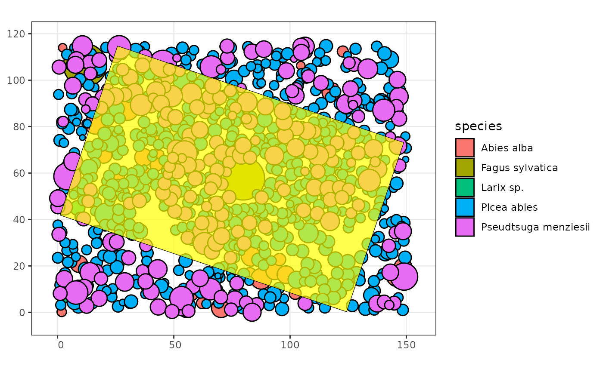
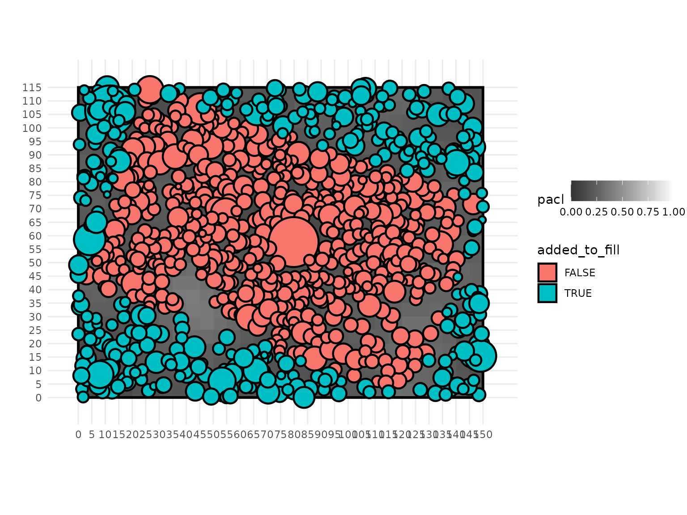
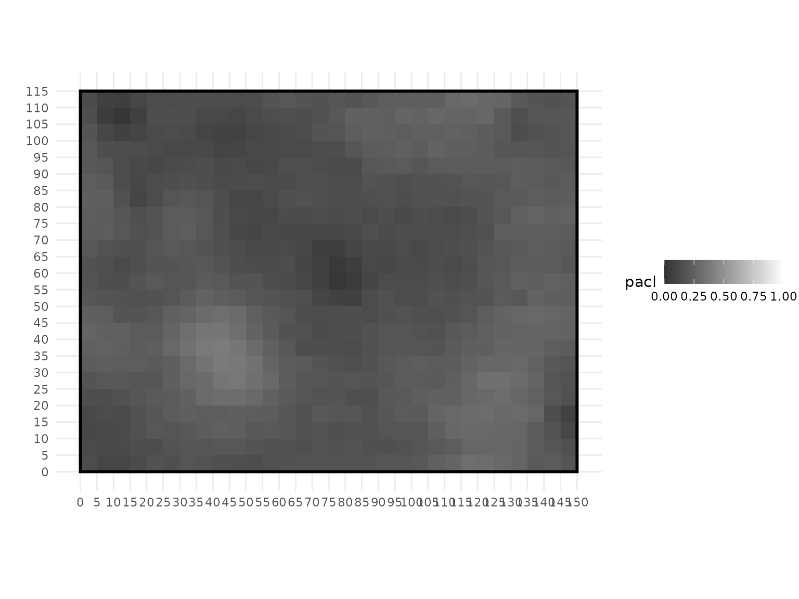
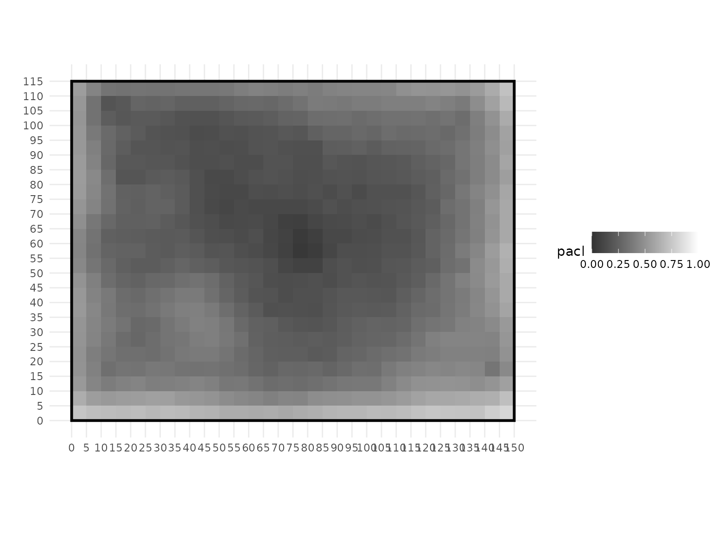

4 - Create a virtual stand from an inventory
Create an axis-aligned rectangle virtual stand from an inventory of trees
4-core_polygon.RmdThis is a tutorial to explain how to create a well formatted SamsaraLight virtual stand from an inventory of trees. At the end of this tutorial, we will better understand how the SamsaraLight model manages the light interception of the trees at the edges of the inventory and the surrounding environment with trees that are not inventoried using a torus system.
# Set seed for randomization reproducibility
# Needed when filling outside the core polygone (see below)
set.seed(5030)Inventory info and constraints
In this tutorial, we will use an inventory collected in the scope of the IRRES project, that aims to understand the mechanisms of the transition from even-aged to uneven-aged management. Here, the IRRES1 stand is composed of common spruce and Douglas fir, with a coppice stool of beech at its center and few silver fir and larch trees.
head(SamsaRaLight::data_IRRES1$trees)
#> id_tree species x y dbh_cm crown_type h_m
#> 1 1 Pseudtsuga menziesii 263190.6 114308.9 36.5 P 28.22
#> 2 3 Pseudtsuga menziesii 263181.9 114298.9 37.3 P 31.18
#> 3 4 Picea abies 263185.0 114302.7 18.7 P 19.48
#> 4 5 Picea abies 263183.3 114312.4 27.0 P 23.39
#> 5 6 Pseudtsuga menziesii 263180.1 114307.6 31.0 P 30.87
#> 6 7 Picea abies 263181.4 114304.5 22.0 P 21.04
#> hbase_m hmax_m rn_m rs_m re_m rw_m crown_openess crown_lad
#> 1 10.42 NA 3.80 3.80 3.80 3.80 0.6 0.5
#> 2 14.44 NA 3.94 3.94 3.94 3.94 0.6 0.5
#> 3 9.99 NA 2.09 2.09 2.09 2.09 0.6 0.5
#> 4 11.38 NA 2.39 2.39 2.39 2.39 0.6 0.5
#> 5 13.04 NA 3.97 3.97 3.97 3.97 0.6 0.5
#> 6 10.54 NA 2.21 2.21 2.21 2.21 0.6 0.5The format and protocol of the inventory here lead us to two new constraints:
- The inventory zone appeared to be a rectangle, but is not axis-aligned : we need to an axis-aligned rectangle stand where we include the inventory zone inside.
- The coordinates are in a particular coordinate system: we need to convert them into ones relative to the created virtual rectangle stand.
ggplot(SamsaRaLight::data_IRRES1$trees,
aes(fill = species)) +
# Radius here are the same across the four cardinals (symmetric crowns)
geom_circle(mapping = aes(x0 = x,
y0 = y,
r = rn_m)) +
coord_equal() +
theme_bw()
Define the inventory zone
We first need to define the inventory zone by creating a data.frame
of vertices. In this tutorial, the IRRES1 as it is a rectangle inventory
zone, thus defined by 4 vertices. The core polygon data.frame is stored
within the SamsaRaLight::data_IRRES1 package resource:
SamsaRaLight::data_IRRES1$core_polygon
#> x y
#> 1 263193.1 114310.3
#> 2 263168.5 114237.4
#> 3 263045.3 114279.0
#> 4 263070.0 114351.9
ggplot(SamsaRaLight::data_IRRES1$trees,
aes(fill = species)) +
# Radius here are the same across the four cardinals (symmetric crowns)
geom_circle(mapping = aes(x0 = x,
y0 = y,
r = rn_m)) +
coord_equal() +
theme_bw() +
# Plot the inventory zone
geom_polygon(data = SamsaRaLight::data_IRRES1$core_polygon,
mapping = aes(x = x, y = y),
inherit.aes = FALSE,
fill = "yellow", color = "black", alpha = 0.7)
Create the virtual stand
cell_size <- 5After defining the inventory zone with a polygon, we need to include
it in an axis-aligned rectangle plot with the coordinates formatted
between 0 and the minimum witdth/height including the inventory zone. To
do so, the user can use the function create_rect_stand() to
create the virtual stand and modify the trees and the core polygon
coordinates, given a cell size.
sl_stand <- create_rect_stand(
trees = SamsaRaLight::data_IRRES1$trees,
cell_size = cell_size,
core_polygon_df = SamsaRaLight::data_IRRES1$core_polygon
)The output of this function returns a list of different elements :
$trees which is the updated tree data.frame with shifted
coordinates, $inv_zone_df which is the updated core polygon
data.frame with the shifted coordinates, $inv_zone_sf which
is the sf object corresponding to the core polygon and
$info is a list with information about the virtual stand
creation.
str(sl_stand)
#> List of 4
#> $ trees :'data.frame': 522 obs. of 16 variables:
#> ..$ id_tree : int [1:522] 1 3 4 5 6 7 8 9 10 12 ...
#> ..$ species : chr [1:522] "Pseudtsuga menziesii" "Pseudtsuga menziesii" "Picea abies" "Picea abies" ...
#> ..$ x : num [1:522] 146 138 141 139 136 ...
#> ..$ y : num [1:522] 71.8 61.8 65.6 75.2 70.5 ...
#> ..$ dbh_cm : num [1:522] 36.5 37.3 18.7 27 31 22 17.7 33.9 33.5 21.7 ...
#> ..$ crown_type : chr [1:522] "P" "P" "P" "P" ...
#> ..$ h_m : num [1:522] 28.2 31.2 19.5 23.4 30.9 ...
#> ..$ hbase_m : num [1:522] 10.42 14.44 9.99 11.38 13.04 ...
#> ..$ hmax_m : logi [1:522] NA NA NA NA NA NA ...
#> ..$ rn_m : num [1:522] 3.8 3.94 2.09 2.39 3.97 2.21 2.18 4.78 2.62 2.16 ...
#> ..$ rs_m : num [1:522] 3.8 3.94 2.09 2.39 3.97 2.21 2.18 4.78 2.62 2.16 ...
#> ..$ re_m : num [1:522] 3.8 3.94 2.09 2.39 3.97 2.21 2.18 4.78 2.62 2.16 ...
#> ..$ rw_m : num [1:522] 3.8 3.94 2.09 2.39 3.97 2.21 2.18 4.78 2.62 2.16 ...
#> ..$ crown_openess: num [1:522] 0.6 0.6 0.6 0.6 0.6 0.6 0.6 0.6 0.6 0.6 ...
#> ..$ crown_lad : num [1:522] 0.5 0.5 0.5 0.5 0.5 0.5 0.5 0.5 0.5 0.5 ...
#> ..$ added_to_fill: logi [1:522] FALSE FALSE FALSE FALSE FALSE FALSE ...
#> $ inv_zone_df:'data.frame': 5 obs. of 2 variables:
#> ..$ x: num [1:5] 148.9 124.3 1.1 25.8 148.9
#> ..$ y: num [1:5] 73.15 0.25 41.85 114.75 73.15
#> $ inv_zone_sf:Classes 'sf' and 'data.frame': 1 obs. of 2 variables:
#> ..$ id : int 1
#> ..$ geometry:sfc_POLYGON of length 1; first list element: List of 1
#> .. ..$ : num [1:5, 1:2] 148.9 124.3 1.1 25.8 148.9 ...
#> .. ..- attr(*, "class")= chr [1:3] "XY" "POLYGON" "sfg"
#> ..- attr(*, "sf_column")= chr "geometry"
#> $ info :List of 10
#> ..$ core_area_ha : num 1
#> ..$ core_batot_m2ha: num 29.9
#> ..$ n_added_tree : num 0
#> ..$ new_area_ha : num 1.73
#> ..$ new_batot_m2ha : num 17.3
#> ..$ cell_size : num 5
#> ..$ n_cells_x : num 30
#> ..$ n_cells_y : num 23
#> ..$ shift_x : num -263044
#> ..$ shift_y : num -114237We can observe the defined inventory zone with the new shifted coordinates:
ggplot(sl_stand$trees, aes(fill = species)) +
# Radius here are the same across the four cardinals (symmetric crowns)
geom_circle(mapping = aes(x0 = x,
y0 = y,
r = rn_m)) +
coord_equal() +
theme_bw() +
geom_sf(data = sl_stand$inv_zone_sf, inherit.aes = FALSE,
fill = "yellow", color = "black", alpha = 0.7)
#> Coordinate system already present.
#> ℹ Adding new coordinate system, which will replace the existing one.
Given in the $info output, we see that the inventory
zone was about 1.0003075 hectare (“core_area_ha”) with a total basal
area of
29.9018908
(“core_batot_m2ha”). The new created virtual stand is now about 1.725
hectare (“new_area_ha”) with a total basal area of
17.3397598
(“new_batot_m2ha”), which is necessary lower because we have the same
trees in a larger area. The virtual stand is composed of 30 cells in the
X-axis (“n_cells_x”) and 23 cells in the Y-axis (“n_cells_y”), with the
cell size that was chosen before by the user. Finally, the coordinates
has been shifted by -2.630442^{5} meters along the X-axis (“shift_x”)
and by -1.1423715^{5} meters along the Y-axis (“shift_y”).
We can use the information from the output of the
create_rect_stand() to run the SamsaraLight model on the
IRRES1 inventory :
out_sl <- SamsaRaLight::sl_run(
# Trees
trees = sl_stand$trees,
# Radiations
monthly_rad = SamsaRaLight::data_IRRES1$radiations,
latitude = SamsaRaLight::data_IRRES1$info[["latitude"]],
# Stand geometry
slope = SamsaRaLight::data_IRRES1$info[["slope"]],
aspect = SamsaRaLight::data_IRRES1$info[["aspect"]],
north_to_x_cw = SamsaRaLight::data_IRRES1$info[["north_to_x_cw"]],
cell_size = cell_size,
# Here, the size of the new axis-aligned rectangle stand are stored in the
# output of the create_rect_stand() function
n_cells_x = sl_stand$info$n_cells_x,
n_cells_y = sl_stand$info$n_cells_y,
# Transmission model (default is the turbid medium)
turbid_medium = TRUE
)We can observe the output light distribution on the ground based on the new created virtual stand :
plot_sl_output(out_sl,
cells.fill = "pacl",
cells.fill.palette = "light01")
Fill the virtual stand around the inventory zone
As we can see above, the inventory zone is including on the center of an empty stand. However, running the SamsaraLigth model on this virtual stand will bias the light estimation, as the trees on the edge of the stand may intercept more energies than it should on the field, where there are in fact surrounded by other trees that we were not inventoried. Consequently, light on the ground around the inventory zone appeared to be higher than it would be on the field.
To counteract this constraint, we can mimic a consistent surrounding environment by filling the virtual stand around the inventory zone with trees that composed the inventory, until we reach the total basal area per hectare of the inventory zone. By doing so, the virtual stand can be considered as representative of the inventory zone.
To do so, we can set the argument fill_around to TRUE on the
create_rect_stand().
sl_stand_filled <- create_rect_stand(
trees = SamsaRaLight::data_IRRES1$trees,
cell_size = cell_size,
core_polygon_df = SamsaRaLight::data_IRRES1$core_polygon,
fill_around = TRUE
)We can observe the new created filled axis-aligned rectangle plot :
ggplot(sl_stand_filled$trees, aes(fill = species)) +
# Radius here are the same across the four cardinals (symmetric crowns)
geom_circle(mapping = aes(x0 = x,
y0 = y,
r = rn_m)) +
coord_equal() +
theme_bw() +
geom_sf(data = sl_stand_filled$inv_zone_sf, inherit.aes = FALSE,
fill = "yellow", color = "black", alpha = 0.7)
#> Coordinate system already present.
#> ℹ Adding new coordinate system, which will replace the existing one.
We can use the new information from the output of the
create_rect_stand() to run the SamsaraLight model on the
IRRES1 inventory by considering the surrounding environment.
out_sl_filled <- SamsaRaLight::sl_run(
# Trees
trees = sl_stand_filled$trees,
# Radiations
monthly_rad = SamsaRaLight::data_IRRES1$radiations,
latitude = SamsaRaLight::data_IRRES1$info[["latitude"]],
# Stand geometry
slope = SamsaRaLight::data_IRRES1$info[["slope"]],
aspect = SamsaRaLight::data_IRRES1$info[["aspect"]],
north_to_x_cw = SamsaRaLight::data_IRRES1$info[["north_to_x_cw"]],
cell_size = cell_size,
# Here, the size of the new axis-aligned rectangle stand are stored in the
# output of the create_rect_stand() function
n_cells_x = sl_stand_filled$info$n_cells_x,
n_cells_y = sl_stand_filled$info$n_cells_y,
# Transmission model (default is the turbid medium)
turbid_medium = TRUE
)And we can observe the final output light distribution on the ground
based on the new created virtual stand. We can fill the trees with a new
variables created in the trees dataset from the
create_rect_stand() (added_to_fill) that is TRUE is the
tree was not in the initial inventory and has been added to fill around
the core polygon:
plot_sl_output(out_sl_filled,
cells.fill = "pacl",
cells.fill.palette = "light01",
trees.fill = "added_to_fill")
Understanding the torus system
This constraint on the edges of the inventory zone could also be extended to the edges of the rectangle virtual plot. Indeed, how the model represents the surrounding environment of the virtual stand ?
To do so, the model represents the stand as a torus system (see Courbaud et al. 2003), that looks like a “donuts” form, by virtually gathering the left and the rights edges of the rectangle, and the top and bottom edges together. Specifically, it considers that the trees on the top edges are surrounding by the trees at the bottom edges (and inversely), and that the trees on the left edges are surrounded by the trees on the right edges (and inversely). By doing so, we can consider that trees at any point in the virtual stand are surrounded by trees representative of the stand.
In the SamsaRaLight R package, the torus system is by default applied
with the default argument use_torus = TRUE of the
sl_run() function. We can compare the light on the ground
of the IRRES1 inventory with or without applying a torus system. As we
can expect, the relative light on the ground is greater on the edges of
the virtual stands when the torus system is NOT applied.
out_sl_filled_noTorus <- SamsaRaLight::sl_run(
# Trees
trees = sl_stand_filled$trees,
# Radiations
monthly_rad = SamsaRaLight::data_IRRES1$radiations,
latitude = SamsaRaLight::data_IRRES1$info[["latitude"]],
# Stand geometry
slope = SamsaRaLight::data_IRRES1$info[["slope"]],
aspect = SamsaRaLight::data_IRRES1$info[["aspect"]],
north_to_x_cw = SamsaRaLight::data_IRRES1$info[["north_to_x_cw"]],
cell_size = cell_size,
# Here, the size of the new axis-aligned rectangle stand are stored in the
# output of the create_rect_stand() function
n_cells_x = sl_stand_filled$info$n_cells_x,
n_cells_y = sl_stand_filled$info$n_cells_y,
# Transmission model (default is the turbid medium)
turbid_medium = TRUE,
# Use a torus system for representing plot edges (default to TRUE)
use_torus = FALSE
)With a torus system
plot_sl_output(out_sl_filled,
cells.fill = "pacl",
cells.fill.palette = "light01",
trees.fill = NULL)
Without the torus system
plot_sl_output(out_sl_filled_noTorus,
cells.fill = "pacl",
cells.fill.palette = "light01",
trees.fill = NULL)